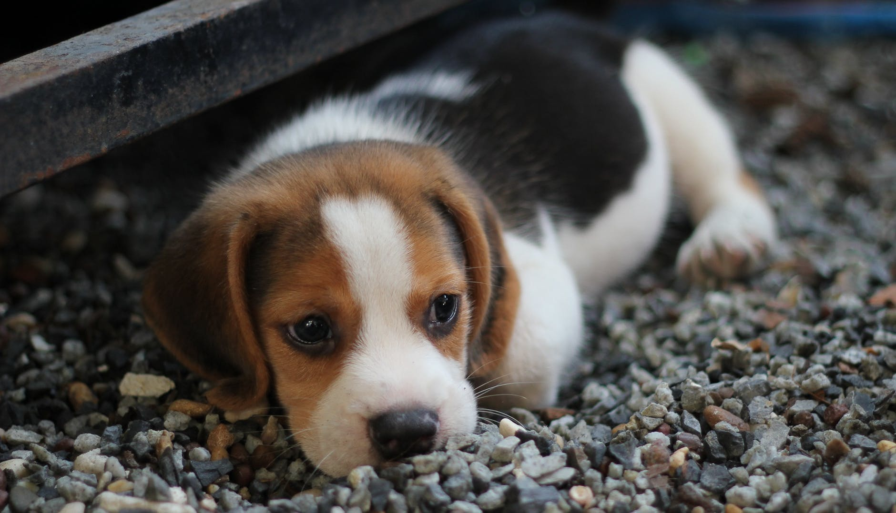

Pros of Beagles:
- Conveniently-sized, sturdy, and athletic
- Completely natural in appearance
- Has a short easy-care coat
- Loves exercise, play, and outdoor activities
- Good-natured and peaceful with everyone
Cons of Beagles:
- An extremely careful search to find good-tempered lines
- Providing a goodly amount of exercise, not just a couple of walks around the block
- Destructiveness when bored or not exercised enough
- An independent "what's in it for me?" attitude – can be obstinate
- Keeping him on-leash or securely fenced
- Controlling baying and howling
- Slowness to housebreak
- Moderate to heavy shedding
- A distinctive doggy odor

As you can see, Beagles are an adorable, strong contender. However, they are not immune to a long list of
undesirable traits.